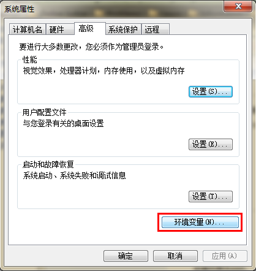
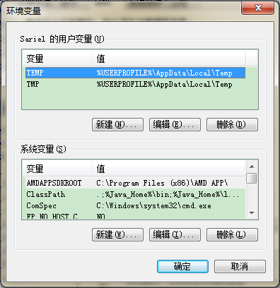
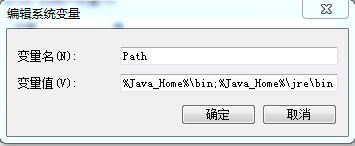

Configuración del entorno de desarrollo Java
En este capítulo te presentaremos cómo configurar el entorno de desarrollo de Java.
- Instalar el entorno de desarrollo en Windows
- Instalar el entorno de desarrollo en Linux
- Introducción a los IDE de Java
Instalación de Java en el sistema Windows
Descargar JDK
Primero necesitamos descargar el kit de desarrollo de Java JDK, dirección de descarga:https://www.oracle.com/java/technologies/downloads/En la página de descarga, elige la versión correspondiente según tu sistema. Este artículo toma como ejemplo el sistema Windows de 64 bits:

Después de la descarga, la instalación del JDK se realiza siguiendo las indicaciones. Además, al instalar el JDK también se instalará el JRE, simplemente instálalo junto.
Al instalar el JDK, durante el proceso de instalación puedes personalizar el directorio de instalación y otra información. Por ejemplo, elegimos el directorio de instalación como:C:\Program Files (x86)\Java\jdk1.8.0_91。
Configurar variables de entorno
1. Después de la instalación, haz clic derecho en "Mi PC", haz clic en "Propiedades" y selecciona "Configuración avanzada del sistema".

2. Selecciona la pestaña "Opciones avanzadas" y haz clic en "Variables de entorno".

Luego aparecerá la pantalla como se muestra en la siguiente figura:

En "Variables del sistema", configura 3 atributos: JAVA_HOME, PATH, CLASSPATH (no importa mayúsculas o minúsculas). Si ya existen, haz clic en "Editar"; si no existen, haz clic en "Nuevo".
Nota:Si usas una versión de JDK superior a 1.5, no es necesario configurar la variable de entorno CLASSPATH para compilar y ejecutar programas Java correctamente.
Los parámetros de configuración de variables son los siguientes:
- Nombre de variable:JAVA_HOME
- Valor de variable:C:\Program Files (x86)\Java\jdk1.8.0_91// Debe configurarse según tu ruta real
- Nombre de variable:CLASSPATH
- Valor de variable:.;%JAVA_HOME%\lib\dt.jar;%JAVA_HOME%\lib\tools.jar;// Recuerda que hay un "." delante
- Nombre de variable:Path
- Valor de variable:%JAVA_HOME%\bin;%JAVA_HOME%\jre\bin;
Configuración de JAVA_HOME


Configuración de PATH


Nota:En Windows 10, la variable Path se muestra en varias líneas; necesitamos agregar%JAVA_HOME%\bin;%JAVA_HOME%\jre\bin;por separado, de lo contrario no se reconocerá:
%JAVA_HOME%\bin; %JAVA_HOME%\jre\bin;
Puedes consultar más contenido en:Configuración de variables de entorno Java en Windows 10

Configuración de CLASSPATH

Esta es la configuración del entorno de Java. Una vez completada, puedes iniciar Eclipse para escribir código; él completará automáticamente la configuración del entorno Java.
Probar si el JDK se instaló correctamente
1. "Inicio" -> "Ejecutar", escribe "cmd".
2. Escribe el comando:java -version、java、javacSi aparecen los siguientes mensajes con esos comandos, significa que la configuración de variables de entorno se realizó correctamente.

Configuración de variables de entorno en Linux, UNIX, Solaris, FreeBSD
La variable de entorno PATH debe configurarse para que apunte a la ubicación donde están instalados los binarios de Java. Si tienes dificultades para configurarla, consulta la documentación del shell.
Por ejemplo, si usas bash como shell, puedes agregar el siguiente contenido al final de tu archivo .bashrc: export PATH=/path/to/java:$PATH
Herramientas de desarrollo Java populares
Como dice el refrán, para hacer bien un trabajo, primero debes afilar tus herramientas. En el proceso de desarrollo con Java también necesitamos una buena herramienta de desarrollo. Actualmente hay muchos IDE en el mercado. Este artículo te recomienda las siguientes herramientas de desarrollo Java:
JetBrainsIDEA, que mucha gente está empezando a usar ahora, es muy potente. Dirección de descarga:https://www.jetbrains.com/idea/download/

VSCode : VSCode (nombre completo: Visual Studio Code) es un editor de código fuente gratuito, multiplataforma y desarrollado por Microsoft.
Dirección de descarga:https://code.visualstudio.com/
Tutorial de instalación: https://www.example.com/w3cnote/vscode-tutorial.html
Netbeans:IDE de Java gratuito y de código abierto, dirección de descarga:https://www.netbeans.org/index.html
Eclipse:Otro IDE de Java gratuito y de código abierto, dirección de descarga:https://www.eclipse.org/downloads/packages/
ElegirEclipse IDE for Java Developers：

Crear tu primera aplicación Java con IntelliJ IDEA
- 1. Inicia IntelliJ IDEA.
- 2. En la pantalla de bienvenida, haz clic en "Nuevo proyecto".
- 3. En el asistente de "Nuevo proyecto", selecciona "Java" en la lista de la izquierda.
- 4. Ponle nombre al proyecto (por ejemplo, HelloWorld) y cambia la ubicación predeterminada según sea necesario.
- 5. En este tutorial no usaremos un sistema de control de versiones, por lo tanto, desactiva la opción "Crear repositorio Git".
- 6. Asegúrate de que IntelliJ esté seleccionado en el sistema de compilación.

Para desarrollar aplicaciones Java en IntelliJ IDEA, necesitas el Java SDK (JDK).
Si el JDK requerido ya está definido en IntelliJ IDEA, selecciónalo en la lista de JDK.
Si tienes el JDK instalado en tu computadora pero no está definido en el IDE, selecciona "Agregar JDK" y especifica la ruta del directorio principal del JDK (por ejemplo, /Library/Java/JavaVirtualMachines/jdk-20.0.1.jdk).

Para crear paquetes y clases, en la ventana de herramientas del proyecto, haz clic derecho en la carpeta src, selecciona Nuevo y luego selecciona Clase Java.
En el campo Nombre, ingresa com.example.helloworld.HelloWorld y haz clic en Aceptar. IntelliJ IDEA creará el paquete com.example.helloworld y la clase HelloWorld.
Comienza a escribir el código:
Escribe un código que imprima "Hello World".
Ejecuta el código y muestra el resultado:
Ejecutar el primer programa Java con Eclipse
La demostración en video se muestra a continuación:
Código del archivo HelloWorld.java: